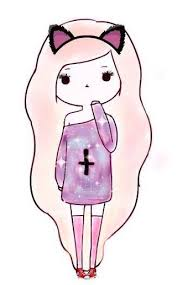
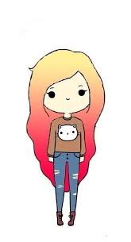

О создателях сайта


Приветствуем, читателя!
Всем привет! Нас зовут Антипова Настя и Забелова Аня, мы из Кривого Рога. Мы создали этот сайт для того что-бы напомнить взрослым, и рассказат детям о старых советских мульфильмах. Здесь вы найдете героев мультфильмов и сами мультики. Однако об этом вы узнаете на странице "Идея для сайта". А пока что мы расскажем вам о нас:
На картинках наши читатели видят создателей сайта: слева Настю, справа Аню.
О Ане
О Насте
Привет, меня зовут Настя!